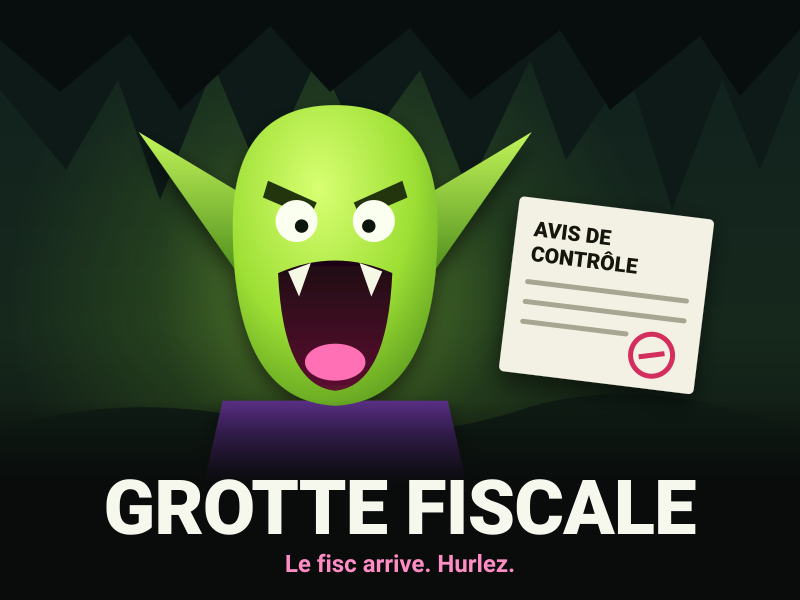

TanteGobeline · Gobelin d’Or · #général
J’ai pas le droit de dire ce qu’il y a dans le build 0.7, mais l’inspecteur a un deuxième ventre.
🟢 214 gobelins ont réagi
Studio de jeu vidéo indépendant, artisanal et sous-dormi. 31 abonnés sur notre page pro, dont nos 8 employés et la mère de Nolan.
BÊTA SOUS NDA · JALON LE VENDREDI 13 NOVEMBRE
Personne ne dort, tout va bien.

Le premier roguelike de contrôle fiscal en milieu souterrain. Vous êtes un gobelin. Vous n’avez jamais déclaré votre trésor. Un inspecteur descend dans votre grotte, et il a des questions. Sortie prévue à l’été 2027, chez notre éditeur Hyperbole Interactive.
Le contenu du build est strictement confidentiel. Nous ne pouvons rien en dire, sauf ce que nous en disons sur la page de la horde.
« La Grotte », c’est notre Discord public : 4 212 gobelins, ouvert à tous, à l’adresse discord.gobelin-hurlant.example.
Les 120 fans au rôle Gobelin d’Or ont signé le NDA et jouent à la bêta fermée. Lou leur envoie la clé et le lien de téléchargement en message privé, tous les mardis.
TanteGobeline · Gobelin d’Or · #général
J’ai pas le droit de dire ce qu’il y a dans le build 0.7, mais l’inspecteur a un deuxième ventre.
🟢 214 gobelins ont réagi
xX_MorveLord_Xx · Gobelin d’Or · #général
Lou m’a répondu en MP en 4 minutes, à 3 h du matin. Ce studio ne dort jamais, respect.
🟢 97 gobelins ont réagi
PépéGobelin · Gobelin d’Or · #entraide
Le lien de la 0.7 ne marche plus chez moi. Quelqu’un a un autre lien ? Envoyez en MP, je clique sur tout.
🟢 12 gobelins ont réagi
Maëlle Quentrec, Grande Hurleuse Fondatrice a publié · mardi 6 octobre 2026
🚀 Humble et hurlante de vous annoncer que Grotte Fiscale a trouvé son éditeur.
👏 1 (elle-même)